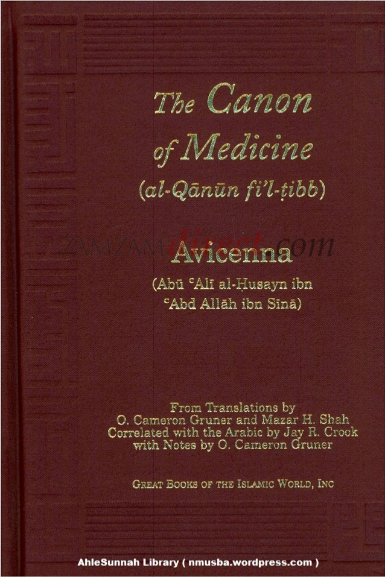

INama Avicenna atau Ibnu Sina dalam dunia kedokteran sudah tak asing lagi. Bahkan, dokter muslim ini juga menyusun buku paling terkenal di dalam sejarah kedokteran yakni The Canon of Medicine....
Sains
Ibnu sina adalah seorang doktor ternama pada zamannya yaitu zaman kekhalifahan abbasiyah. Beliau dikenal dengan nama "Avicenna". Bagi banyak orang dia dia adalah Bapak Kedokteran Modern, karena banyaknya penemuan penemuan yang hingga saat ini masih digunakan oleh dunia medis modern....
Filsuf
Filsafat Ibn Sina yang menandai puncak filsafat paripatetik Islam, didasarkan pada ontology, sehingga Ibn Sina disebut juga sebagai ‘filosof wujud”. Ada tiga hukum menurut ibn Sina untuk membedakan “wujud murni” dengan “eksistensi dunia”....

Karya Karya
Berikut ini karya tulisan yang dilahirkan oleh Ibn Sina dan berpengaruh besar terhadap generasi penerusnya: 1. Kitab Qanun fi al-Tibb (Canon of Medicine). Karyanya dalam bidang ilmu kedokteran. Buku yang terbagi atas 3 jilid ini pernah menjadi....